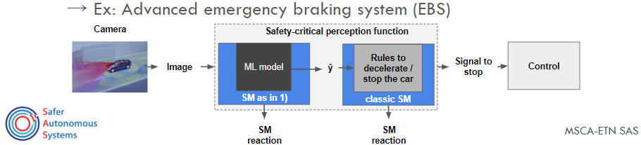

ML-based perception functions (PF) such as emergency breaking systems or traffic signal detectors are key functions for autonomous systems. In these softwares, Machine learning (ML) models are the most important component of an PF.
However, ML models can give wrong predictions even with 99% of confidence, and verify all possible faults of these complex models is known to be infeasible. Therefore, there is a current urgence on the developement of runtime techniques for ensure the correct behavior of these safety-critical systems.

My PhD research focused on developing Safety monitors for perception function. These monitors have the challenge to identify when a potential error of the ML model is about to happen.
Such challenging project is part of a huge Horizon 2020 European project called ETN-SAS
(more details about the project here).
Below, you can find several articles, projects and softwares outputted from this ongoing research.
SiMOOD: evolutionary testing SiMulation with Out-Of-Distribution images
Evaluating ML models in safety-critical scenarios is usually performed by analyzing metrics based on positive and negative rates over a dataset containing several perturbations.
However, using such metrics on such datasets can be misleading since not all OOD data lead to failures in the perception system.
Hence, testing a perception system cannot be reduced to measuring ML performances on a dataset but rely on the images captured by the system at runtime.
However, the amount of time spent to generate diverse test cases during a simulation of perception components can grow quickly since it is a combinatorial optimization problem.
Aiming to provide a solution for this challenging task, we developed SiMOOD, an evolutionary simulation testing of safety-critical perception systems, which comes integrated into the CARLA simulator.
Unlike related works that propose to simulate scenarios that raise failures for control or specific perception problems such as adversarial and novelty, we provide an approach that finds the most relevant OOD perturbations that can lead to hazards in safety-critical perception systems.
Moreover, our approach can decrease, at least in 10 times, the amount of time required to find a set of hazards in safety-critical scenarios such as autonomous emergency braking system simulation.
Code is also publicly available.
We developed a live fault injection integration with CARLA containing 30 transformations with several levels of intensity and three types of OOD data:
Novelty classes, anomalies, distributional shift, and noise.